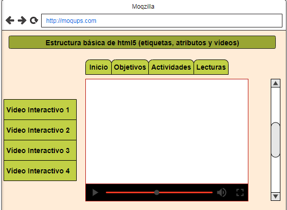

Estructura basica de html5 (etiquetas, atributos y videos)
Objetivos del sitio:
General:
Desarrollar OVI de aprendizaje correspondiente a estructura basica html5.
Especificos:
Diseñas Mockup para mostrar al cliente con sus respectivas opciones.
Plantear mediante codigo html5 estructura basica de aprendizaje.
Sincronizar de manera correcta los diseños mediante las plataformas.
Materiales:
Se presentan materiales utilizados para la actividad:
Lectura y ejemplos de la estructura HTML: Estructura basica HTML
Actividad interactiva estructura basica html: Juego Interactivo
Video aprendizaje estructura basica html: Video estructura basica HTML
Contenido:
Descripcion estructura basica HTML5
Lo primero que nos encontramos es la declaración del tipo de documento que se está mostrando. El DOCTYPE variará según el tipo de documento realizado, en nuestro ejemplo hemos utilizado el doctype del HTML5 que es maravillosamente sencillo.
html Tras declarar el tipo de documento, indicamos que iniciamos nuestro documento HTML. Esta etiqueta se cierra cuando finalizamos el documento. Vemos que lleva un atributo lang, esto sirve para indicar el idioma del documento (en nuestro caso español)
head En un documento HTML tenemos una cabecera dónde colocaremos los metadatos de la página, el código JavaScript y el CSS que utilizará el navegador para renderizar la página.
meta charset Obligatorio en HTML5, informa el juego de caracteres del documento, debería ser siempre utf-8. Como todo metadato debe ir dentro del head
title Es un tipo de metadato especial que nos proporciona el título de la página. Por motivos de posicionamiento (SEO) se recomienda que el meta title sea parecido al H1 del documento y a la URL de la página.
body En su interior tendremos el contenido de la página.
HTML5 lo nuevo
HTML5 ha venido a solucionar, entre otras cosas, la falta de un criterio para definir el contenido semántico de una página web agregando una serie de etiquetas destinadas a facilitar la estructura del documento desde el punto de vista de su significado.
section: Esta etiqueta sirve para agrupar elementos relacionados entre sí de forma temática. Los section creados a nivel del body serán aquellos cuyo contenido de significado a la página, o sea, formen el contenido principal de la misma.
article: Esta etiqueta es «la última etiqueta con significado semántico». Habitualmente se utiliza dentro de un section para separar las unidades de contenido con significado semántico.
header: Creada para incluir información destinada a ayudar en la navegación. Suele incluir un H1 y, de declararse a nivel de body, la etiqueta nav.
nav: Esta etiqueta la utilizaremos para incluir el menú de navegación.
footer: Destinada a incluir la información sobre el elemento que lo contiene (autoría, propiedad, enlaces…)
aside: Su uso indicado es para agrupar el contenido a visualizar en la página, pero que no forma parte del contenido principal de la página.
Estas nuevas etiquetas permiten varios niveles de anidamiento entre sí. Por ejemplo, un section (por definición del estándar) debe tener un header y un footer, además de los article necesarios, pudiendo incluso tener otros section en su interior.
A nivel de body también podemos tener un header y footer, estando dentro del header la etiqueta nav con el menú del sitio web.
Los aside también pueden estar a nivel de body, section e incluso article.
Todo esto aporta un alto grado de complejidad a la estructura del documento, aunque aporta una enorme flexibilidad para estructurar correctamente el contenido de la página desde le punto de vista semántico.
Otras novedades de HTML5.
Mockup:
A continuacion presento la imagen correspondiente al mockup:
